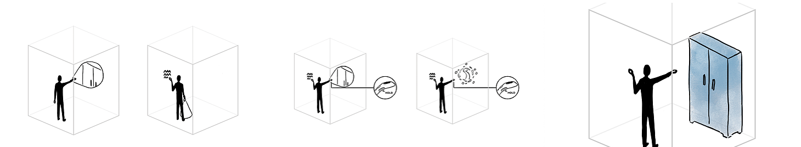

L'empreinte des sens
Game Description
L'empreinte des sens is a puzzle virtual reality game. The player's objective in this game is to recall the lost memories of the character you are playing. To be able to remember, the player will have to use three of his senses: his sight, his hearing and his touch. This way he will be able to sense parts of his memory, that he will be able to combine to form complete recollections of events.
My responsiblities and missions
- Designed and programmed the virtual reality gameplay: worked with the HTC Vive headset to implement interactions in-game.
- Created the torchlight feature and shader: the 3D objects are invisible unless the player uses the torchlight on them.
- Programmed and implement a part of the puzzles of the game: interacting with doors, opening objects, using keys...
- Level designed the layout and implemented it in Unity.
- Helped program the main mechanic of the game that consists on combining two senses in present in the 3D space to make the hidden object appear in front of the player. 